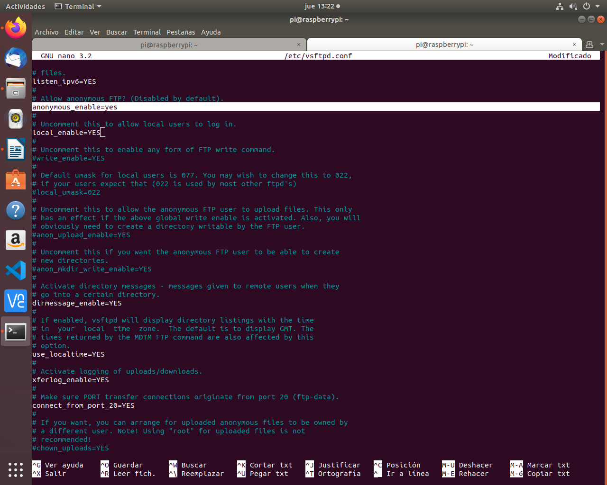
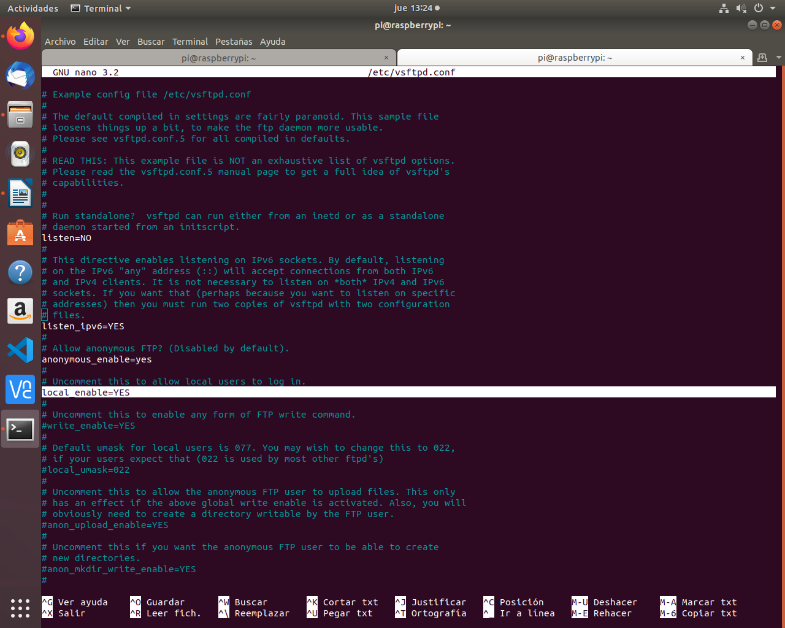
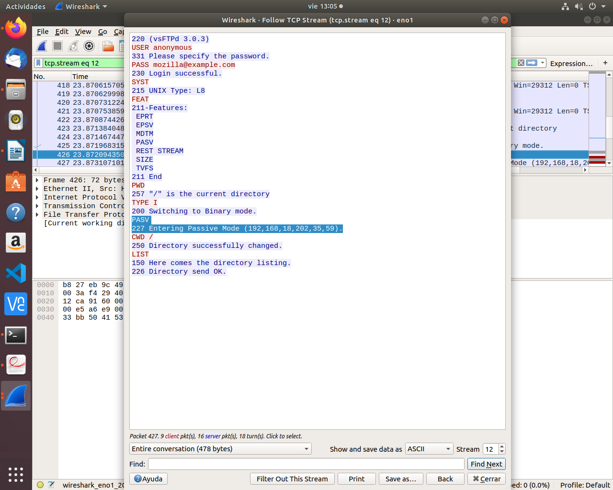
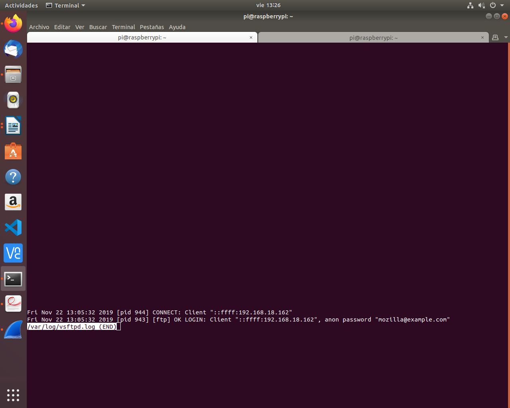
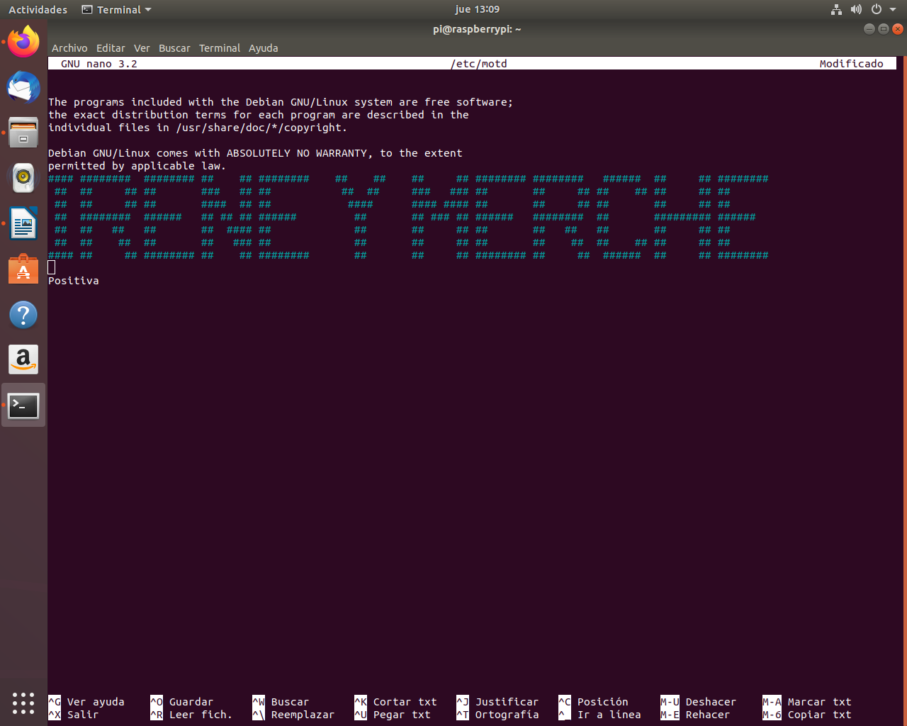

Práctica 1
Instala el servidor vsftpd en la Raspberry Pi con que tenga las siguientes características:
1-Que sea un servidor FTP anónimo para descargas.
Ponemos el comando sudo nano /etc/vsftpd.conf
Cambiamos en anonymous_enable = no por YES

2-Que sea un servidor FTP para usuarios de sistema y que puedan tanto descargar como subir archivos.
Ponemos el comando sudo nano /etc/vsftpd.conf

3-Funcione en modo pasivo.
Abrimos wireshark
Nos vamos a Firefox y ponemos ftp://192.168.18.202 para crear tráfico
Una vez que hemos generado tráfico lo paramos y ponemos en la barra ftp, seleccionamos uno botón derecho follow y ya nos sale el modo pasico

4-Habilita los logs.
Ponemos el comando sudo less /var/log/vsftpd.log

5-Cambia el mensaje de bienvenida
Ponemos el comando sudo nano etc/motd
